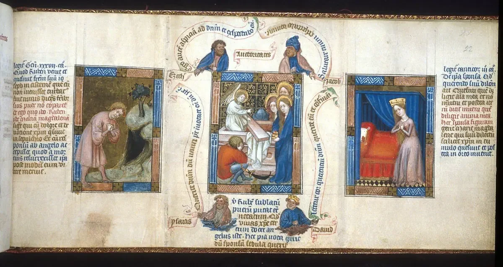
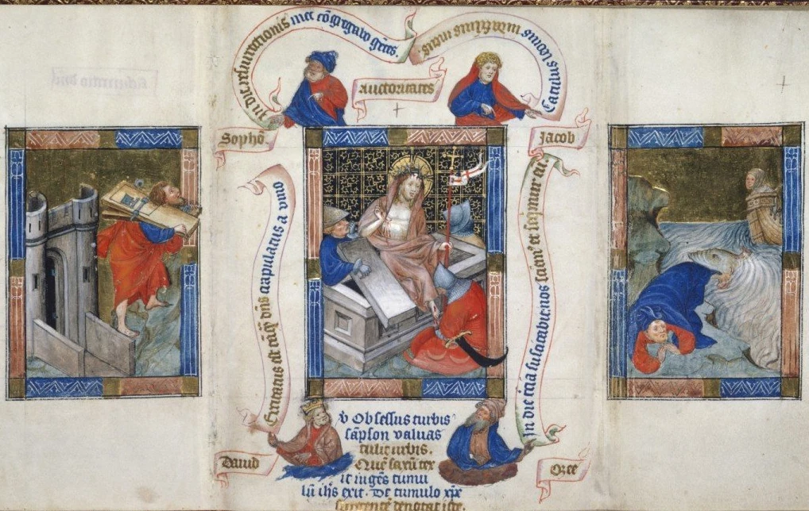
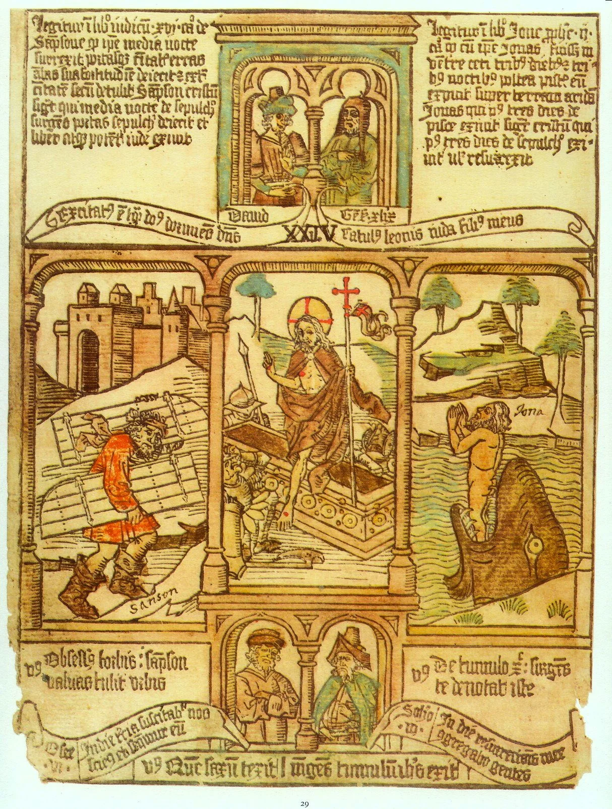

아직 펼치지 않은 카드손으로 그린 말씀 · 4빈자의 성경예수의 무덤을 찾은 여인들 그림 양옆에, 구약의 두 장면이 짝지어 그려져 있어요. 어떤 장면들이 ‘닮은꼴’로 붙었을까요?가운데 그림과 양옆 그림이 서로 닮았대. 무엇이 닮았을까?
1405년 무렵네덜란드 지방 · 지금은 대영도서관
빈자의 성경
앞면 쪽보다 두 장 앞, 같은 책에는 예수가 무덤에서 일어나는 쪽이 있어요. 그 둘레에 사사기와 요나서, 시편과 창세기, 스바냐와 호세아의 장면과 말씀이 모여 있어요. 성경 곳곳에 흩어진 일곱 조각을 한 쪽에 모아 보세요.
가운데 예수님 그림 둘레에, 성경 여기저기서 온 그림 조각이 모여 있대. 우리가 조각을 하나씩 모아 볼까?
검수 전 시안이에요(기준서 1판). 모으기의 ‘일곱 조각’은 실제로 잘라 낸 조각이 아니라, 성경 곳곳에서 고른 장면과 말씀을 이 책이 한 쪽에 모은 것을 빗대어 보여 드리는 거예요. 예언자들의 말은 빅토리아 앨버트 박물관의 영어 풀이를 바탕으로 뜻만 옮겼어요. 상상은 ‘눈 감고 상상해 보기’에만 썼어요.
시안 확인용카드 단계 미리 보기
1
일곱 조각의 쪽
앞면의 ‘무덤을 찾은 여인들’ 쪽보다 두 장 앞, 같은 책의 20번째 장이에요. 가운데에 무덤에서 일어나는 예수를 두고, 둘레에 구약의 두 장면과 예언자 넷의 말씀을 모았어요.
이 일곱 조각은 실제로 잘라 낸 조각이 아니에요. 성경 곳곳에 흩어져 있는 장면과 말씀을 이 책이 한 쪽에 모은 것을, 이 안내서가 ‘흩어진 조각’에 빗대어 보여 드려요. 조각을 하나씩 눌러 제자리로 모아 보세요.
성경 곳곳에 흩어진 일곱 조각을 하나씩 눌러 제자리로 모아 보세요. 조각마다 성경 어디에서 왔는지 알려 줘요.

『빈자의 성경』(대영도서관 King’s 5) 20번째 장 ‘부활’ 쪽, 1405년 무렵 · 그림: 『빈자의 성경』(1405년 무렵), 대영도서관 · 퍼블릭 도메인 · 위키미디어 공용
조각을 눌러 보세요. 그 조각이 성경 어디에서 왔는지 나와요.
일곱 조각이 다 모였어요. 사사기, 요나서, 시편, 창세기, 스바냐, 호세아에 흩어져 있던 장면과 말씀이 가운데 한 장면을 둘러싸요.
구약의 사람과 일을 신약의 일을 미리 보여 주는 ‘앞그림’으로 읽는 방법을 ‘예표’라고 해요. 이 책의 짝은 모두 이 생각을 따라 골랐어요(빅토리아 앨버트 박물관).
가운데 예수님 둘레에 성경 여기저기서 온 그림 조각이 모였대.
물어보기물고기 배에서 나온 요나랑 가운데 그림은 무엇이 닮았을까?
2
나무에 새긴 같은 쪽
같은 일곱 조각은 다른 『빈자의 성경』에도 나와요. 사진은 헝가리 에스테르곰 대성당 도서관에 있는 15세기 목판본의 ‘부활’ 쪽이에요. 글과 그림을 한 장의 나무판에 통째로 새겨 찍고, 손으로 색을 칠했어요.
왼쪽에 성 문짝을 멘 삼손(그림 속 이름 ‘Sanson’), 오른쪽에 물고기 입에서 나오는 요나(‘Iona’)가 그대로 있어요. 그런데 예언자들의 자리는 달라요. 위에 다윗과 야곱, 아래에 호세아와 스바냐가 있어요.

빈자의 성경은 필사본만 80가지가 넘게 남아 있어요(빅토리아 앨버트 박물관). 두 쪽을 견주어 보면, 같은 짝이 손그림에서 나무판으로 옮겨 간 것이 보여요.
이건 나무판에 새겨서 찍은 그림이야. 삼손이랑 요나가 또 있어!
물어보기두 그림에서 똑같은 사람을 찾아볼까?
눈 감고 상상해 보기
15세기 어느 수도원의 조용한 방. 낡은 그림책을 펼치자, 가운데 그림 둘레에 성경 곳곳의 사람들이 둘러서 있어요. 손가락으로 삼손의 성문을 짚고, 요나의 물고기를 짚고, 다시 가운데로 돌아와요.
눈을 감아 봐. 커다란 그림책을 펼쳤어. 가운데 그림 둘레에 성경 속 사람들이 빙 둘러서 있어!
나의 자리
가운데 그림 둘레에 한 조각을 더 놓을 수 있다면, 성경의 어느 장면을 놓고 싶나요?
가운데 그림이랑 닮은 성경 이야기를 하나 더 찾는다면, 무엇이 떠올라?
마음에 닿는 한 줄을 고르거나 직접 써 보세요. 한 줄을 남기면 이 자리의 도장이 찍혀요. 이 기기에만 저장돼요.
더 깊이
궁금한 칸만 펼쳐 읽어도 괜찮아요.
알고 보면
King’s 5 대영도서관의 이 필사본은 1405년 무렵 네덜란드 지방에서 만들었어요. 위키미디어 공용은 그림을 ‘클레베의 마르가레타 기도서의 대가’라는 별명의 화가 솜씨로 적어요.
40쪽 이런 쪽이 40쪽쯤 이어지는 책이에요. 쪽마다 신약의 한 장면을 구약의 두 장면 사이에 두고, 예언자 넷의 말을 위아래에 두루마리로 달았어요(빅토리아 앨버트 박물관).
목판본 한 쪽의 글과 그림을 나무판 하나에 통째로 새겨 찍은 책이에요. 40장짜리 『빈자의 성경』 목판본은 1460년 무렵 네덜란드에서 판을 새겼고, 여러 판이 남아 있어요(글래스고 대학 · 모건 도서관).
기록마다 다른 점
예언자의 자리 대영도서관의 필사본은 위에 스바냐와 야곱, 아래에 다윗과 호세아를 두었어요. 빅토리아 앨버트 박물관의 목판본 쪽과 에스테르곰 목판본은 위에 다윗과 야곱, 아래에 호세아와 스바냐를 두었어요.
몇 장 몇 절일까 라틴어 성경은 요나가 뭍으로 나오는 구절을 2장 11절로, 우리말 성경은 2장 10절로 셈해요. 시편은 라틴어 77편이 우리말 78편이고, 호세아는 라틴어 6장 3절이 우리말 6장 2절이에요.
함께 읽는 말씀
말씀은 뜻만 옮기고, 본문은 대한성서공회 개역개정으로 이어 드려요.
마태복음 28장 1~10절 가운데 그림의 이야기예요. 안식일 다음 날 새벽, 무덤을 찾은 여인들이 예수가 살아나셨다는 말을 들어요.
사사기 16장 1~3절 한밤에 가사의 성 문짝을 메고 나간 삼손 이야기예요.
요나 2장 10절 하나님이 물고기에게 말씀하시자 물고기가 요나를 뭍에 내뱉어요.
호세아 6장 2절 이틀 뒤에 살리시고 셋째 날에 일으키시리라는 말씀이에요.
집에서 보기
확인한 날 · 2026년 11월 18일 · 바뀌기 쉬운 정보라 정기적으로 다시 확인해요
빅토리아 앨버트 박물관 누리집에서 같은 ‘부활’ 쪽의 목판본을 크게 보고, 쪽 위 글의 영어 풀이도 읽을 수 있어요. 글래스고 대학의 옛 인쇄본 누리집에서는 목판본 쪽을 펼친 모습을 볼 수 있어요.
일곱 조각 금박
흩어진 일곱 조각을 모두 제자리로 모으면 카드에 금박이 입혀져요.
일곱 조각을 모두 모으기
아이와 함께 채색
아이와 함께 ‘영화처럼 보기’를 끝까지 보면 카드가 채색돼요.
아이와 함께 ‘영화처럼 보기’를 끝까지 보기
근거 보기 (8)
- Victoria and Albert Museum: Biblia pauperum(E.714-1918) — 가운데 부활(마태 28:1~10), 왼쪽 가사의 성문을 멘 삼손(사사 16:2~3, 한밤에 무덤을 나온 그리스도), 오른쪽 요나와 고래(요나 2:11, 사흘 뒤), 예언자 넷의 말(다윗 시 77:65, 창 49:9, 스바냐 3:8 ‘부활의 날에 나라들을 모으리라’, 호세아 6:3), 위아래 자리, 40쪽쯤, 예표, 필사본 80가지 넘게, 1460년 무렵 북네덜란드
- Glasgow Incunabula Project: Biblia pauperum — 목판본, 1460년 무렵 네덜란드(판을 새긴 때), 40장짜리 목판본의 여러 판
- The Morgan Library & Museum: Biblia pauperum(PML 19328) — 네덜란드, 1460~1463년 무렵, 40장
- Warburg Institute Iconographic Database — 사사 16:3 가사의 성문을 메고 가는 삼손, 그리스도 부활의 앞그림(빈자의 성경·구원의 거울)
- Evangelische Theologische Faculteit Leuven 도서관: Biblia pauperum — Facsimile edition of the forty-leaf blockbook in the library of the Esztergom Cathedral(1967) — 에스테르곰 대성당 도서관의 40장짜리 목판본
- 위키미디어 공용: King’s 5, Folio 20, Resurrection — 1405년 무렵, 화가 ‘클레베의 마르가레타 기도서의 대가’
- Wikipedia: Biblia pauperum — 길잡이
- 대한성서공회 개역개정: 마태복음 28장 · 사사기 16장 · 요나 2장 · 호세아 6장 · 시편 78편 · 창세기 49장 · 스바냐 3장
그림·사진·소리 출처
‘처음 만나는 기독교 문화’의 깊은 카드예요. 카드 단계와 남긴 글은 이 기기에만 저장돼요.